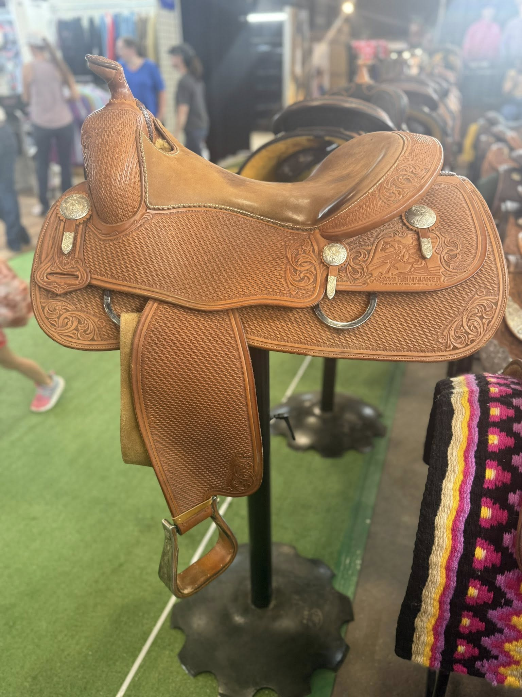
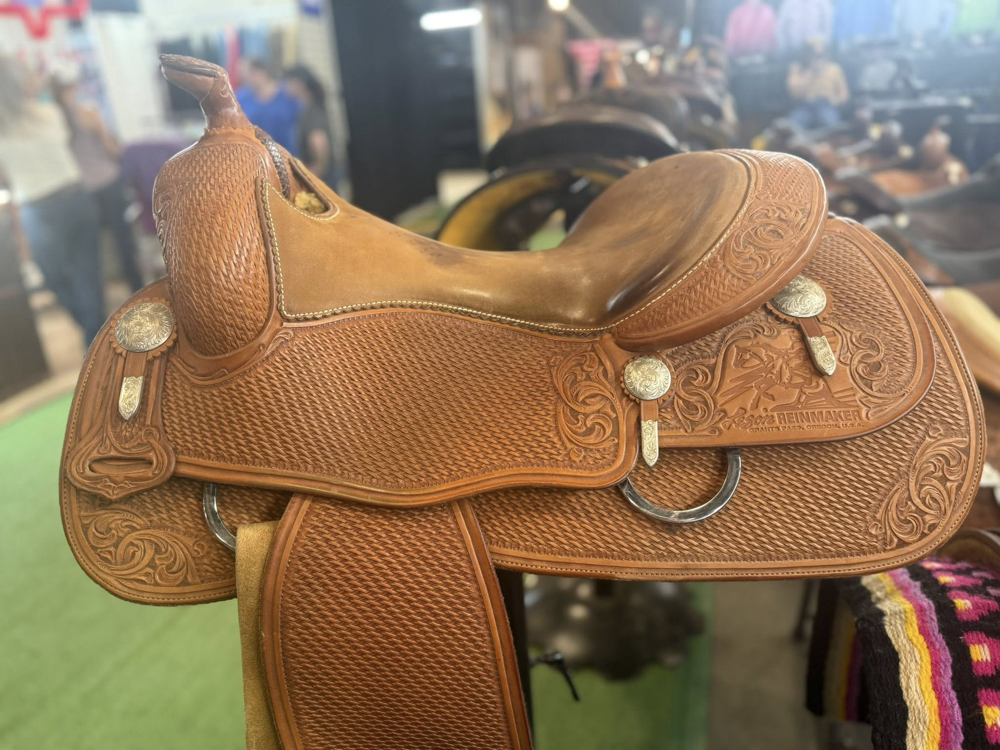
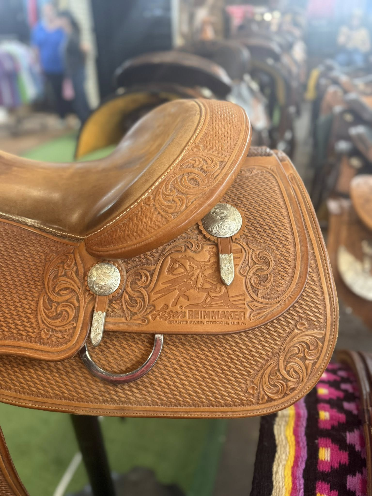
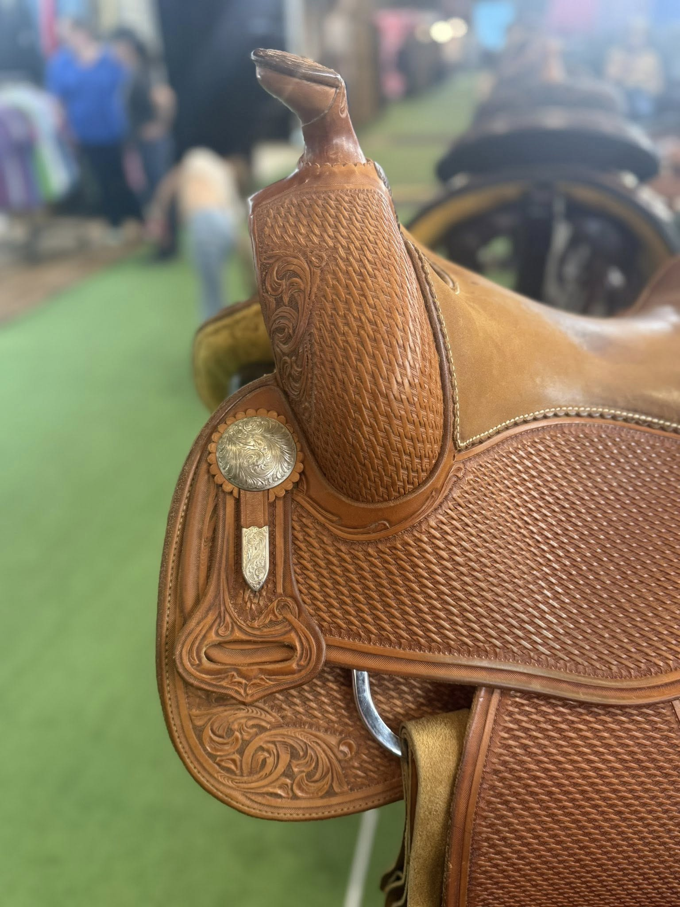

Donn Leson Reinmaker — 16" Seat
$7,995
| Maker | Donn Leson — Grants Pass, Oregon |
|---|---|
| Seat Size | 16" |
| Tree Width | Contact for fit details |
| Leather | Honey/chestnut |
| Tooling | Diagonal basketweave field, full floral scroll borders |
| Hardware | Engraved silver conchos with pendant keepers |
| Condition | Lightly used — excellent |
The Donn Leson Reinmaker is one of the most distinctive saddles coming out of Grants Pass, Oregon. This example features Leson's signature diagonal basketweave field surrounded by flowing full floral scroll borders — a tooling combination that photographs beautifully and holds up exceptionally over time. The honey/chestnut leather has developed a rich, even patina consistent with light use.
Engraved silver conchos with pendant keepers anchor the front and rear dees in classic fashion. The stamp reads "Donn Leson REINMAKER — Grants Pass, Oregon, U.S.A." — an unambiguous mark of American craftsmanship. Tree width details are available on request; contact David to discuss fit for your horse.
Shipping available. David ships nationwide. Contact for a quote to your zip code.
Inspected & certified by David Solum — 40+ years in reining saddles
Inquire About This Saddle